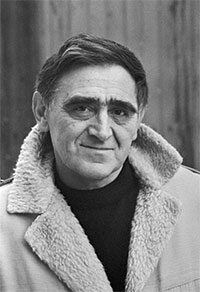
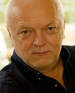
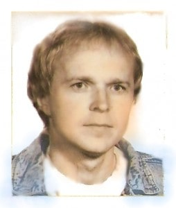

Jan Skácel
Básně Jana Skácela, zejména z básnické sbírky Smuténka, Robert Slezák s oblibou zhudebňuje. Celé album Vánoce dospělých je složeno právě z těchto zhudebněných básní.
Jan Krůta
Textař, spisovatel a publicista Jan Krůta, který s oblibou navštěvuje koncerty B.R.S., složil pro tuto kapelu tolik písní, že z nich mohlo být sestaveno album Srdce na talíři. A vydáním alba spolupráce samozřejmě neskončila, můžeme se tedy ještě těšit na mnoho krásných písní.
Napsal více než dvacítku knih pro děti i dospělé (například Jeho Veličenstvo Míč, Čurumbum, Upoviny, Se Sluníčkem kolem světa, Šúbidy blues, Pravdě do očí, Namlouvání,Černé labutě Majoucta,Úspěch – a co za to?, Krátký řádky, Roky jako motýli, Klec na Slavíky, Jizvy na zip – Bylo debilo, Majoucta II aneb Jsem malující šašour, Doktor Petarda) Je autorem rozhlasových, televizních a filmových scénářů (celovečerní film Vyhrávat potichu). Otextoval na 1200 písní (např. pro trojnásobného Zlatého slavíka D. Jandu, K. Gotta, H. Hegerovou, H.Vondráčkovou, I. Bartošovou, M. Davida, M. Prokopa, J. Spáleného, Blue Effect ad.). V poslední době mu učarovala tvorba famózního kytaristy Roberta Slezáka a společně vytvořili část repertoáru jeho kapely. Absolvoval Pedagogickou fakultu UK. Jako kulturní redaktor působil rok v časopise Sedmička, později dvanáct let v časopise Mladý svět a další léta byl šéfredaktorem časopisu Sluníčko. Byl zakládajícím členem, producentem a ředitelem firmy Bonton. V současnosti je majitelem mediální, PR a umělecké agentury Arcadia Art Agency.
Karel Chlumec
Novinář, publicista, textař a básník, který má na kontě kolem 5000 vydaných článků rozličných žurnalistických žánrů a fotografií, je kmenovým textařem skupiny Blues R.S. Vydal dvě sbírky poezie a písňových textů. V současnosti pracuje jako novinář na volné noze, spolupracuje s redakcemi deníků MF Dnes, Právo, Benešovský deník, týdeník Dům a bydlení. Nově je teď také členem redakčního týmu internetového portálu www.peprnet.cz Je autorem projektu vzdělávacích kurzů žurnalistiky a tvůrčího psaní, které slouží především jako příprava studentů k dalšímu studiu nebo rekvalifikační. (www.zurnalistika.estranky.cz) „Lidi se mě často ptaj, jestli vzniká dřív text nebo hudba. U mě je to tak, že píšu texty a teprve potom je předám Robertovi, pak spolu ještě konzultujeme drobnosti. Počítám s tím, že ho text osloví a spoléhám na jeho muzikantskou invenci. Při některých melodiích mě ale také automaticky naskakují slova…“ „Při psaní textu mi záleží na tom, aby to byl příběh, ze kterého je cítit pravda. Druhá věc, kterou od textu požaduji je, aby měl určitý nadhled a obecný přesah. Snažím se vyhýbat popisnosti a klišé, ale i tajuplnosti některých básníků, kterým téměř nikdo nerozumí. Vybalancovat tyhle věci bývá někdy těžké. Často jde o náhlé pohnutí mysli, kdy přisedne můza, to pak jde rychle, jindy je to přenášené dítě. Aby byl text dobrý, musím s ním být spokojený i po letech“ „Prvním naším bluesmanem by byl Karel Hynek Mácha, kdyby tehdy něco jako blues existovalo. Dokonalý pocit opravdového blues vystihuje snad nejlépe text – Na tváři lehký úsměv, hluboký v srdci žal. Jeho život bylo jedno velké blues, jeho smrt byla bluesová. K dalším našim předním bluesmanům minulosti by mohl patřit i František Gellner.“ K fotce: Zvířata mám rád, často jsou lepší než někteří lidé (já fakt jinou nemám, tak omluva za rozlišení).